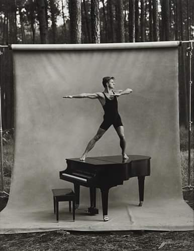
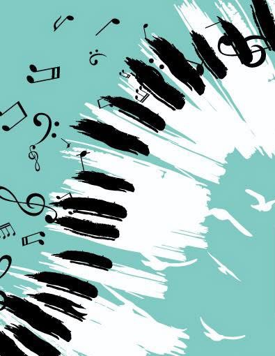
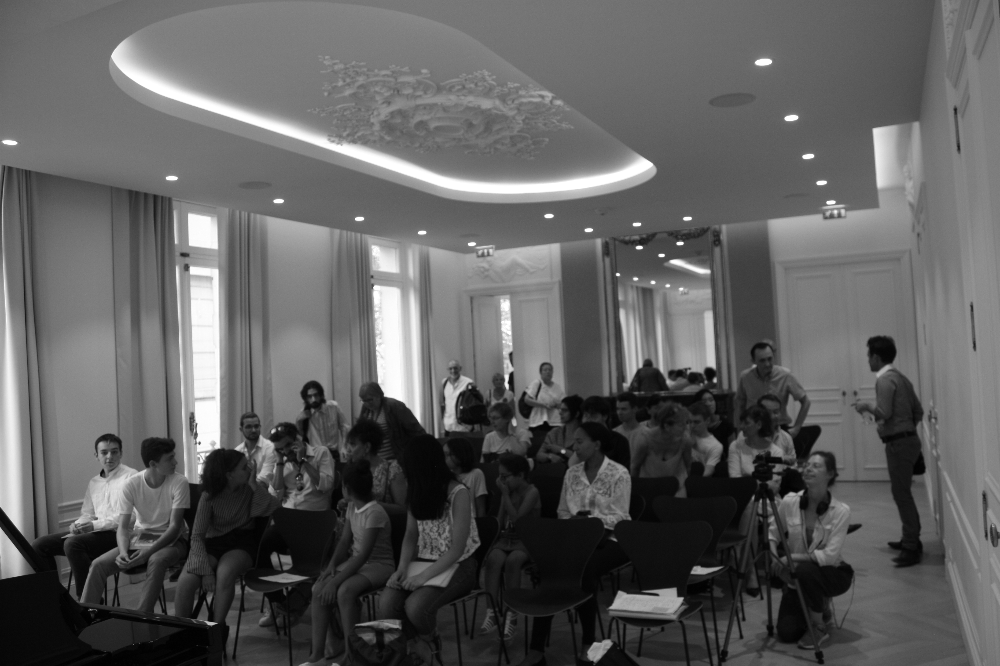
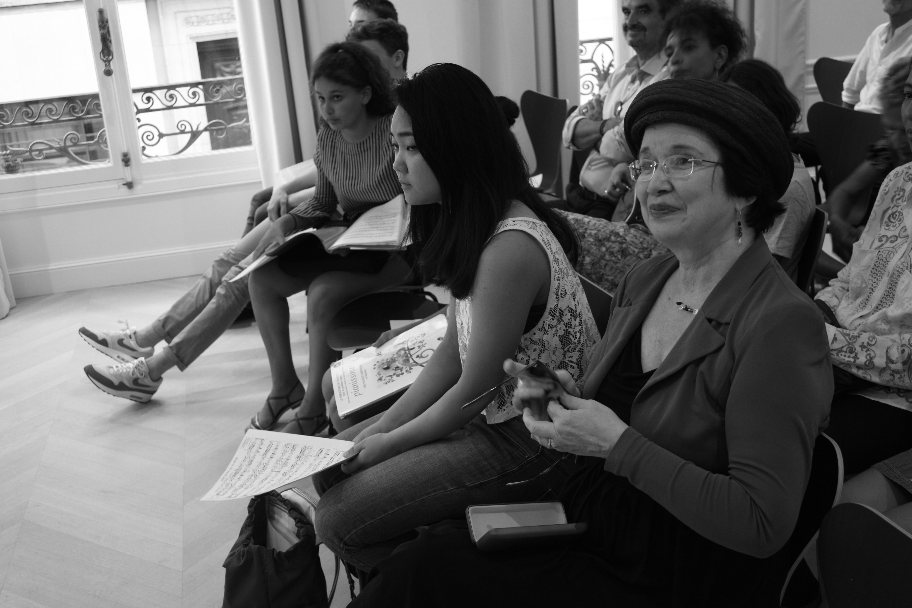
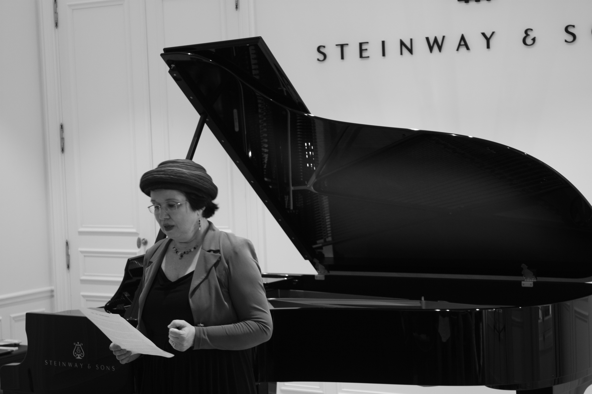
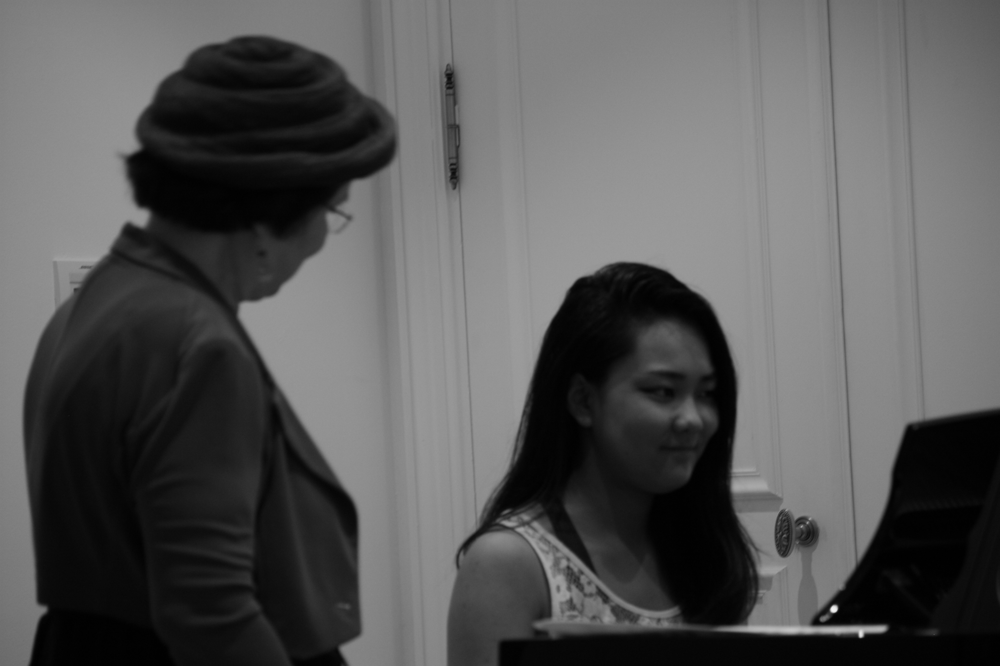
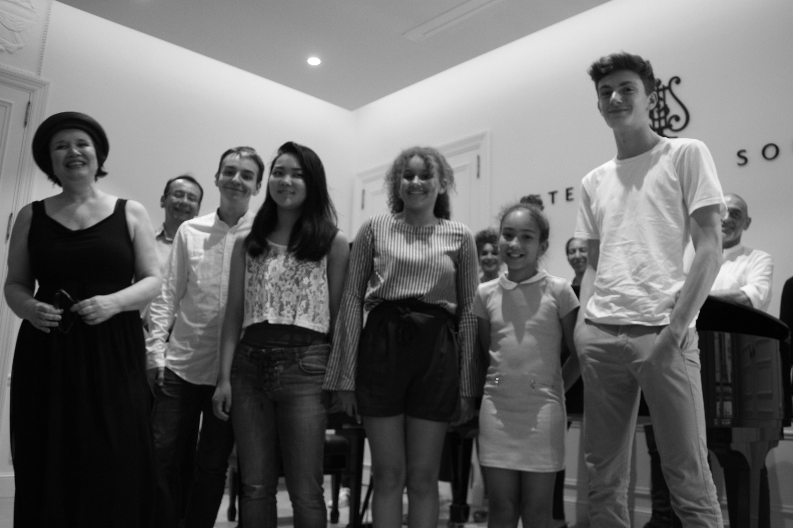

Le choix inconditionnel des cours particuliers individuels


J’ai enseigné 10 années à la Schola Cantorum et plusieurs conservatoires parisiens, ce fut une expérience passionnante et enrichissante.
Mais, aussi prestigieux soient ces établissements, j’ai constaté la différence des résultats entre mes élèves des écoles et ceux de mes cours privés.
Cela est particulièrement visible pour les débutants : (dans les conservatoires, les cours de solfège tous instruments sont collectifs, en général clé de sol uniquement), cours de 20 mn de piano avec impossibilité de lire les notes de la main gauche en clé de fa !
Bref une rupture solfège/instrument déplorable et inévitable et une réussite presque toujours réservée aux personnes baignant déjà dans un milieu musicien !
Même pour les élèves plus avancés, certaines phases de travail ne pourront se faire dans le cadre d’un établissement officiel : les programmes aussi judicieux seraient-ils, le rythme d’apprentissage sont imposés et souvent en rupture avec la personnalité de l’élève, aussi passionné soit il !
Souvent également, déjà une préparation physique personnalisée sera indispensable, afin de libérer les élèves avancés de certains automatismes néfaste, et de préparer les débutants à une disponibilité aux conseils de base.
De même sur le plan du contrôle cérébral : anticipation, réceptivité, émissivité ne peuvent se faire qu’à des moments précis de l’apprentissage, avec des exercices et un répertoire personnalisé finement.
Ce sera la même nécessité de cours individuel pour développer la concentration, la gestion de l’émotivité de l’élève.
Enfin, l’apprentissage de la représentation mentale du clavier pour les pianistes ou du chant intérieur pour les chanteurs ne peut se faire qu’en privé : cela fera gagner ensuite des heures, éviter un travail répétitif, laborieux et imitatif : l’assimilation sera accélérée et pourra sans cesse avancer, sans entraves !

Les cours individuels se situent dans un cadre de relation personnelle. Ils sont indispensables pour résoudre les problèmes de chacun (physique, émotionnel, musical, humain). Ils constituent les étapes de construction d’une autonomie véritable en excluant toute perte de temps.
Alors pourquoi ai-je créé une école ? Pour allier l’exigence à la passion musicale.
Parce qu’un contrôle et un encouragement régulier s’avère nécessaire pendant un certain temps ; d’où l’importance de choisir des cours à l’année ou un stage ; un engagement et un lieu où venir avec plaisir. Les élèves peuvent profiter durant les cours de mon piano demi queue ! Le but : progresser, acquérir un acquis inébranlable et s’épanouir en évoluant.
"Par la musique deviens ce que tu es"




